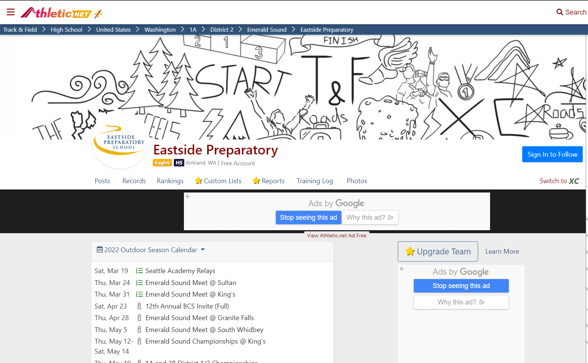

Beneficial Sites To Improve your Running Knowledge
- This is where I buy my Shoes!
-
- In my opinion there the best walking/running shoes. Brooks have different shoe models for different purposes which's handy while buying.

- Records and times of all teams, schools, for every running event across the nation.
-
- This is a nation wide cite for track and cross country events. It's an area where middle and high school students can see your school, team, and individual times. I use this to see my individual results and my competition.
- 
- Everything you want to know about running!
-
- It's a website to develop, inform, and healthy about running. Any question, technique, advice this cite has it.